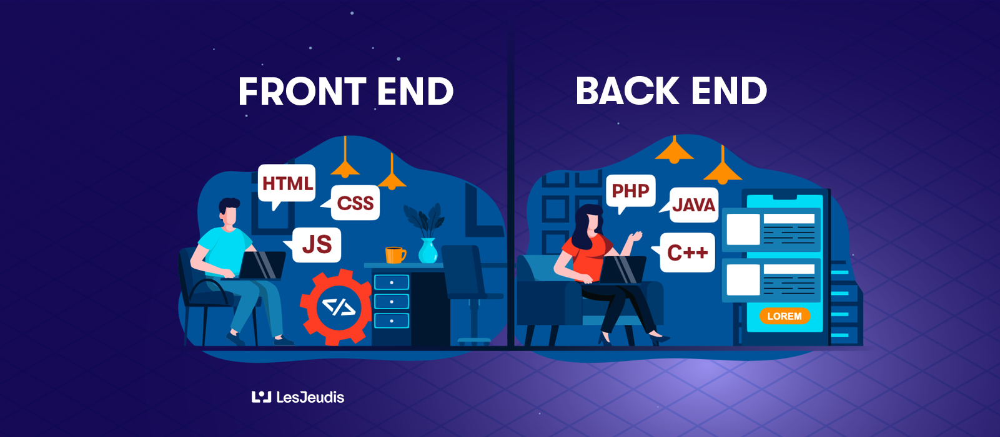

T: Le développeur back-end gère toute la partie « non visible » du développement : il conçoit les éléments techniques nécessaires au fonctionnement d'un site, il se charge de la gestion des bases de données… Il a donc une connaissance approfondie des langages de programmation tels que PHP, Ruby, Python, Java, .
